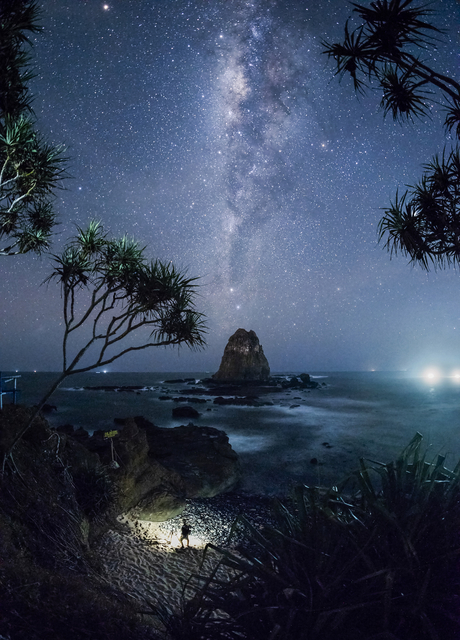
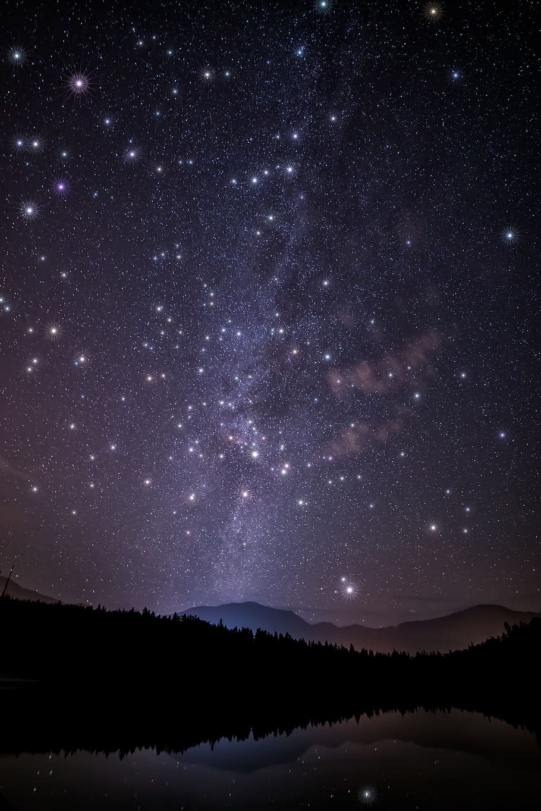
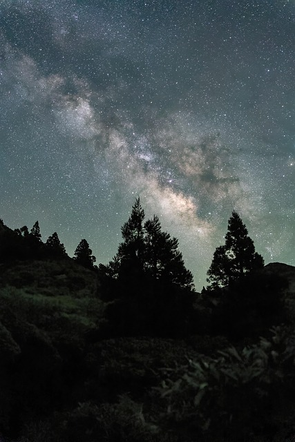

A starry night sky is a breathtaking natural wonder that fills the darkness with countless sparkling lights. As the sun sets and the world grows quiet, the sky transforms into a vast canvas of shimmering stars scattered across deep shades of blue and black. Each star seems to tell its own story, creating a sense of mystery and calm. The soft glow of the Milky Way stretches across the horizon, adding a magical touch to the scene. Gazing at a star-filled sky often brings feelings of peace, reflection, and awe, reminding us of how vast and beautiful the universe truly is.


